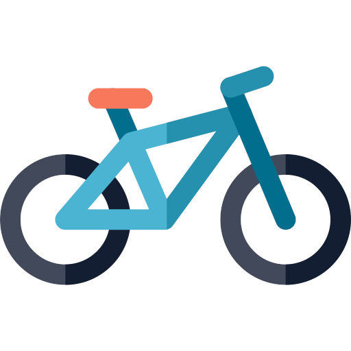

Exploring Mountain Biking Across the UK
Mountain biking is a dynamic and diverse sport that takes place across a variety of off–road terrains throughout the UK. From forest trails and open moorland to steep technical descents, the sport is made up of several key disciplines — including cross–country, downhill, four–cross, and freeride — each offering its own unique appeal and challenges.
Cross–country (XC) is perhaps the most accessible form of mountain bike racing. Events typically take place in woodlands, parks, and forestry sites, with courses designed to test stamina and bike–handling skills. Expect a mix of climbs, descents, and tricky sections, often enhanced by purpose–built obstacles like rock gardens and tight switchbacks created by experienced course designers.
Downhill mountain biking is a discipline built on speed, control, and adrenaline. These events take place on steep, descending trails filled with features like roots, rocks, drops, and jumps. Riders race the clock on these point–to–point runs, many of which are purpose–built for competitions or embedded in permanent bike parks across the UK.
Four–cross is designed for short, intense bursts of racing where four riders compete side–by–side on wide, descending tracks. These trails are usually packed with man–made features like berms, jumps, and rollers, creating fast–paced, high–contact races full of tactical skill and aggression.
But mountain biking isn't just about competition — it's also about exploration and freedom. The UK is home to thousands of miles of bridleways, byways, and legal trails that criss–cross the countryside, offering riders endless options for discovering new landscapes, whether you're navigating with a GPS or an Ordnance Survey map in hand.
For those who prefer a more structured experience, the UK's network of mountain bike trail centres is second to none. Found across England, Wales, Scotland, and Northern Ireland, these centres provide clearly marked, graded routes suited to all skill levels. You'll also find on–site facilities like bike hire, cafés, wash stations, workshops, and changing rooms, making them the perfect one–stop destination for a day of riding — whether you're heading out solo or with the club.

Mountain Biking
Club Hubs Around the UK
We have active cycling groups and rides in the following locations:
Colchester, Essex (Headquarters)
Our home base and a thriving cycling hub offering a mix of road, gravel, and social rides. Weekly group rides depart from the town centre and explore the scenic countryside and coastal roads of Essex. Perfect for all levels — from weekend cruisers to competitive riders.
Dalby Forest, North Yorkshire
An ideal destination for mountain biking enthusiasts. Members here enjoy a range of forest trails, including our popular Breeze into the Forest rides — friendly, women–only rides led by trained volunteers. Great for skill–building and confidence.
Manchester
Our Manchester group brings together urban riders and countryside adventurers. From commuter rides to social evening loops, this hub is known for its inclusive atmosphere and active participation in regional cycling events.
Brighton & Hove
Rides along the coast? Yes, please! Our Brighton hub offers scenic seafront routes, South Downs hill climbs, and plenty of café stops. Social rides are the heart of this group — relaxed, friendly, and always with good coffee involved.
Fort William, Scotland
The go–to location for mountain bike thrill–seekers. Fort William riders tackle challenging terrain, including technical downhill and trail centre routes. Training sessions and coaching are available for those looking to push their limits.
Bristol
A lively hub with a strong emphasis on green commuting, road cycling, and weekend adventure rides into the Wye Valley. Regular group rides, time trials, and maintenance workshops are held throughout the year.
Edinburgh
Our Scottish capital hub balances scenic routes with a strong social core. Members meet for regular road rides out to the Lothians, as well as indoor winter training sessions when the weather turns.
Swansea, Wales
Home to some of our most scenic coastal rides. Swansea riders enjoy a mix of road and gravel cycling, from Gower Peninsula loops to Brecon Beacon climbs. Great vibes and a close–knit group.
Belfast, Northern Ireland
The Belfast group offers access to both urban routes and countryside escapes. Expect well–organised weekend rides, social events, and a welcoming mix of leisure and performance–focused cyclists.
Peak District (Sheffield area)
Founded in 1953 and home to around 70 active members, this club has a rich history in road racing, time trials, and social riding. A great place to share knowledge and grow your cycling experience.
Calling All Cycling Enthusiasts!
At the UK United Cyclists, it's not just about the ride — it's about the people, the stories, and the shared journey. Whether you're racing downhill, riding socially, or just looking for the best café stop, you'll find your place here.
Long journeys can be tiring...
...which is why our trip programme includes scenic beach breaks — a chance to unwind, take a dip, and recharge by the water before getting back in the saddle. Because every great adventure deserves a moment of rest.